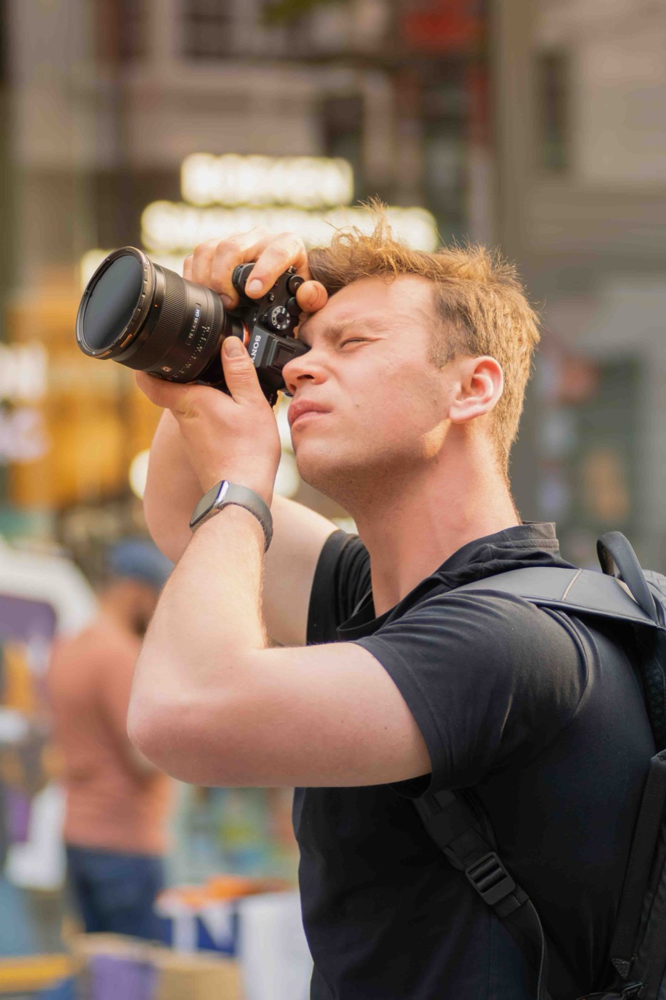

Fotograaf & videograaf — België
Verhalen die je
blijven voelen.
Van snelheid en sfeer tot de kleinste details. Beeld met karakter, gemaakt om bij te blijven.
Scroll om te ontdekken
Selectie
Werk dat spreekt
zonder woorden.
Elke opdracht krijgt een eigen ritme, kleur en verhaal. Bekijk de selectie of filter op wat jou inspireert.
YOUR STORY — MY FOCUS — YOUR STORY — MY FOCUS —

Achter de camera
Ik ben Seppe.
Gedreven door licht, beweging en echte momenten.
Fotografie en videografie zijn voor mij meer dan mooie beelden maken. Ik zoek naar wat een merk, persoon of moment herkenbaar maakt — en vertaal dat naar beelden met sfeer, detail en emotie.
Van automotive en producten tot evenementen, portretten en trouwreportages: elk project krijgt dezelfde aandacht en een resultaat dat helemaal van jou voelt.
Laten we iets maken ↗Wat ik maak
Heb je iets in gedachten?